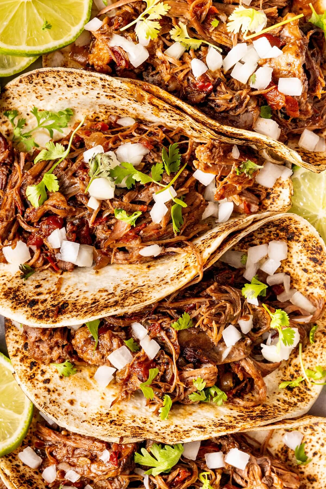

Home
Birria de Res Tacos (Beef Birria Tacos)

Description
If you've never had beef birria tacos then you are missing out! The recipe is a bit time consuming but the outcome is worth it. The tender beef is to die for.
Ingredients
Consommé:
- 2 cups reserved sauce from beef birria recipe
- 1 cup chicken broth
- ¼ diced carrots
- ¼ diced celery
- ½ diced cabbage
Tacos:
- 3 tbsp reserved beef fat from beef birria recipe, or more as needed
- 8 (5 inch) corn tortillas
- 2 cups freshly grated Monterey Jack cheese
- 2 cups shredded Beef Birria
- 4 tbsp chopped white onion, or to taste, divided
- 4 tbsp chopped fresh cilantro, or to taste, divided
- 1 medium lime, cut into 4 wedges
Directions
- Gather ingredients.
- To make consommé: Stir beef birria sauce, chicken broth, carrots, celery, and cabbage together in a saucepan over high heat. Bring to a simmer, then reduce the heat to medium-low and simmer, occasionally brushing the caramelized bits (fond) off the side with the hot liquid, until vegetables are nice and tender and consommé has reached the desired consistency, about 20 minutes. Reduce heat to low and keep hot while preparing tacos.
- To make tacos: Heat some reserved beef fat in a large skillet over medium heat until melted. Add two tortillas and flip with a spatula until generously coated in fat. Toast briefly until golden brown, then cover with Monterey Jack cheese and some shredded beef.
- Drizzle each taco with about 1 tbsp consommé liquid, then top with white onion and cilantro.
- Fold tacos in half and press gently. Continue to cook, flipping back and forth, until browned and crispy, 2 to 3 minutes. Transfer to a plate and repeat to make remaining tacos, adding more fat if necessary.
- Ladle consommé into a bowl and garnish with remaining white onion and cilantro. Squeeze lime wedges into consommé and serve with tacos.